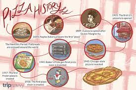

10 Fast Facts About the History of Pizza
The history of pizza worthy of a feature film, complete with all the Hollywood drama you would expect from a blockbuster thriller. Well, maybe not quite. However, the story of how this tasty dish gained global fame and a die-hard group of enthusiastic patrons is certainly worthy of a look.
The very reasons why pizza is beloved - the ingredients can be simple and affordable, are the reasons why pizza’s origins date back over 2,200 years (depending on what you define as a pizza). Here are 10 facts you might not have known about your favorite go-to meal option.
Flat Breads with Toppings Were Consumed by the ancient Egyptians, Romans, Greeks
If you didn’t know, the first iterations of pizza were made with flatbread. Toppings such as herbs and meats were added over generations as a combination of a diverse meal into one dish that could be eaten at once and was affordable. Early pizza consumed in Naples, beginning in the 1600s, featured the tasty garnishes beloved today, such as tomatoes, cheese, oil, anchovies, and garlic.
One of the First Pizzerias in the US Still Uses the Same Stove
From History.com, “One of the first documented United States pizzerias was G. (for Gennaro) Lombardi’s on Spring Street in Manhattan, licensed to sell pizza in 1905. (Prior to that, the dish was homemade or purveyed by unlicensed vendors.) Lombardi’s, still in operation today though no longer at its 1905 location, “has the same oven as it did originally,” notes food critic John Mariani.”
Pizza Might Have Started in the Middle East
Most people, especially Americans, consider pizza to be an Italian dish. However, as we referenced before, that really depends on what you qualify as pizza. From Wonderopolis.org: “Do you think of pizza as a flatbread cooked in an oven? If so, its roots go back to ancient times in the Middle East. The ancient Babylonians, Israelites, and Egyptians all ate flatbread (sic) baked in mud ovens.”
Pizza Wasn’t Widely Popular in the US Until After WWII
Italian immigrants brought pizza with them to Spain, France, England, and the United States in the late 1800s and early 1900s. It didn’t gain popularity until after World War II, when returning soldiers looked for delicious food made from flatbread and spices they had grown to love while fighting overseas.
Pizza-Making Tools Found in the Ruins in Pompeii
From Garrubbo.com, “Artifacts such as marble slabs and culinary tools resembling those commonly found in today’s pizzerias were discovered in the ashes smothering Pompeii after the eruption of Mount Vesuvius on August 24, 79 A.D.
The Margherita Style Pizza Was Invented for King Umberto I and Queen Margherita
In 1889, King Umberto I and Queen Margherita visited a newly Italy as a newly unified nation. They made a pit stop in Naples. Due to boredom of French haute cuisine, Queen Margherita asked for varieties of pizza to try. Raffaele Esposito, a baker from Da Pietro Pizzeria (now known as Pizzeria Brandi) invented a pie with red tomato sauce, white mozzarella, and green basil. Why this combination? Well, first of all, it’s delicious, but second of all these items happen to share the same colors as the Italian flag. You could say Queen Margherita's approved. Margherita pizza was thus born and remains a staple to this day.
Neapolitan Pizza Has A Specific Set of Rules, Recognized byThe Real Neapolitan Pizza Association
The goal of the organization is to preserve the true essence of the pizza. Currently, only the Margherita and the Marinara recipes are considered authentic Neapolitan pizzas.
Rules of the Association state that pizza dough should contain Italian wheat flour (type 0, or 00, or a mixture), natural Neapolitan yeast, salt, and water. Any ingredient added to dough making process will invalidate the authenticity of the dish.
The Hot Debate Over Deep Dish Pizza
It is often reported that Chicago-style deep-dish pizza was invented in 1943 at Pizzeria Uno in Chicago by owner Ike Sewell. But that might just be because the pizzeria’s owner was known just as much for his showmanship as his pizza. A 1956 article from the Chicago Daily News asserts that Uno's original pizza chef Rudy Malnati developed the recipe. Either way, we’re happy it’s here, and on our menu.
Nearly $150 Billion in Yearly Revenue
Via ThoughtCo.com, “Today, the pizza business brings in an estimated $46 billion in revenue in the United States, with the top 50 pizza chains earning roughly $27 billion. Even more impressively, the entire industry is making about $145 billion worldwide.”
California Currently Boasts the Record for Most Pizza Places of Any State
As of 2019, there are over 77,000 pizzeria locations in the U.S. While Pennsylvania holds the per capita record (number of pizzerias in comparison to population), California has the most, with a total of 7,125.